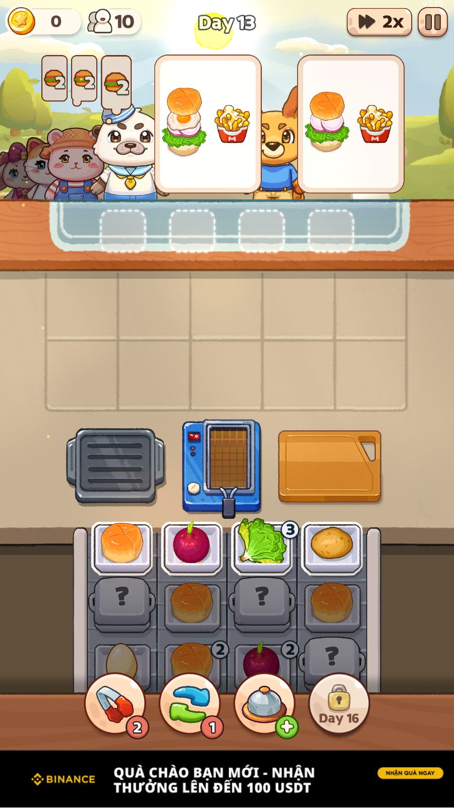

Tăng tốc x2
Mô tả
- Nút 2x trên HUD tăng gấp đôi tốc độ nấu và phục vụ. Tốc độ này chạy bằng một quỹ thời gian (time bank) tính bằng giây, không phải bằng số lần.
- Người chơi mới có sẵn 5 phút miễn phí (countdown 04:59 khi bật). Quỹ chỉ giảm khi 2x đang bật và game đang chạy.
- Hết quỹ thì bấm 2x mở popup nạp: 20 phút = 1.200 gem hoặc xem quảng cáo = +8 phút (mặc định RC).
- 1.15 làm lại hệ thống thành
SpeedUpSystemControllervới hai loại item: quỹ thời gian (time-bank-speed_up) và gói Unlimited theo hạn (unlimited-speed_up), cả hai có thể phát làm thưởng.
Thiết kế chi tiết
Tóm tắt thiết kế
- Playtest Bấm 2x ở Day 15: nút chuyển xanh lá và hiện 04:59 đếm ngược theo thời gian thực. Không cần quảng cáo.
- Code Tốc độ chạy bằng quỹ giây, trừ theo
unscaledDeltaTime(đồng hồ thật, không nhân 2), nên 5 phút là 5 phút thật dù game chạy nhanh gấp đôi. Tạm dừng, mất focus thì quỹ đứng. - Live 16/11 Save thật:
time-bank-speed_up= 300 đầu phiên, 263 cuối phiên: chơi 2x chưa tới 1 phút, quỹ gần như còn nguyên. - APK Hết quỹ thì nạp 20 phút = 1.200 gem hoặc 8 phút = 1 quảng cáo. Prefab lại ghi 15 phút / 800 gem: hai giá trị mặc định lệch nhau.
- Code 1.15 thêm item Unlimited Speed Up có thời hạn (ngày / giờ), khi có thì quỹ không bị trừ, và item Speed Up Time để phát làm quà. Đây là phần làm lại so với 1.11.
- Nhận định Quỹ 5 phút dùng chung cho cả tài khoản (không reset mỗi level) khiến 2x là tài nguyên khan hiếm: người chơi tự chọn level nào đáng dùng, và popup nạp tạo điểm bán gem / quảng cáo.
Luồng người chơi từng bước
- Lần đầu: nhận 5 phútHệ thống Live 16/11
EnsureBankLoadedđặttime-bank-speed_up= 300 vàSpeedUpBankInit= 1.Key cũSpeedUpRemainingSecondsvẫn còn trong save. - Thấy nút 2xGiao diện PlaytestNút "2x" cạnh Pause ở HUD level.

HUD Day 13: nút "2x" cạnh nút Pause ở góc trên phải - Bật 2xNgười chơi PlaytestNút xanh lá, đồng hồ 04:59 chạy ngược; game nấu và phục vụ nhanh gấp đôi.

Day 15: bấm 2x, nút xanh lá và đồng hồ đếm ngược 04:59 (5 phút miễn phí, không cần quảng cáo) - Quỹ cạn, game về 1xHệ thống Code
Updateđưa quỹ về 0 rồiSetActive(false). - Bấm 2x lúc hết quỹNgười chơi CodeHiện popup "x2 Speed": nút gem (1.200) và nút quảng cáo (+8 phút).Popup dừng thời gian level cho tới khi đóng.
- Nạp xong, 2x bật lạiHệ thống Code
Recharge(addedSeconds, nguồn)cộng quỹ và bật 2x; ghispeed_up_buyhoặcspeed_up_ads.

speed_up_config: hai bộ giá trị mặc định
| Trường | RC mặc định (APK, đang chạy) | Prefab inspector | Ý nghĩa |
|---|---|---|---|
| speed | 2 | 2 | Hệ số tốc độ |
| freeMinutes | 5 | 5 | Quỹ tặng ban đầu (phút) |
| activateMinutes | 20 | 15 | Phút cộng khi nạp bằng gem |
| price | 1.200 | 800 | Giá gem |
| canUseAds | 1 | 1 | Cho nạp bằng quảng cáo |
| adsMinutes | 8 | 8 | Phút cộng khi xem quảng cáo |
Nguồn: Data/remote_config_defaults/speedUp.json (decoded vs inspector). Live 16/11 không ghi đè.
Save thật (profile, pack item)
| Key | Đầu phiên | Cuối phiên | Ghi chú |
|---|---|---|---|
| time-bank-speed_up | 300 | 263 | Quỹ giây còn lại |
| SpeedUpBankInit | 1 | 1 | Đã tặng quỹ |
| SpeedUpRemainingSeconds | 300.0 | 300.0 | Key legacy, không cập nhật nữa |
Nguồn: _analysis/save_115/profile.json, save_end/profile.dat.
Hai item của hệ thống SpeedUp
| Id | Tên | Lớp thông tin thưởng | Tác dụng |
|---|---|---|---|
| time-bank-speed_up | Speed Up Time | SpeedUpTimeRewardItemInfo (phút) | Cộng vào quỹ giây |
| unlimited-speed_up | Unlimited Speed Up | SpeedUpTimeRewardItemInfo (ngày / giờ) | Thời hạn 2x không trừ quỹ |
Vận dụng cho game khác
- Bán tốc độ như một quỹ thời gian dùng chung: tặng sẵn một ít để người chơi thử, hết thì nạp bằng tiền hoặc quảng cáo.
- Trừ quỹ bằng đồng hồ thật (không bị nhân tốc độ) để con số người chơi thấy khớp với thứ họ nhận.
- Tách "vô hạn có hạn" (Unlimited) khỏi quỹ để dùng làm quà gói đắt tiền mà không phá cân bằng quỹ thường.
Bảng tổng hợp mọi tính năng đã làm chi tiết: FoodiePop_ThietKeChiTiet.xlsx.
Mở khóa & điểm vào
Không có điều kiện mở khoá trong code: nút 2x đã có ở Day 13 (Playtest) và cả quỹ 5 phút được tặng ở lần đọc save đầu tiên (SpeedUpBankInit). Ngày bắt đầu hiện nút chưa xác minh (Playtest bắt đầu ở Day 13).
Điểm vào:
- Nút "2x" ở góc trên phải HUD trong level (cạnh nút Pause)
- Popup "x2 Speed" (
UIPopupBuySpeedUp) khi bấm 2x lúc quỹ rỗng - Item thưởng
time-bank-speed_up/unlimited-speed_uptừ gói, sự kiện (TryGrantReward)
Cách hoạt động
- Vào level:
OnLevelEnterghi_isInLevel, kiểm Unlimited còn hạn (IsUnlimitedLevel). - Bấm 2x:
TogglegọiSetActive(true). - Nếu quỹ ≤ 0,01 giây và không phải Unlimited: phát
onRechargeRequestedthay vì bật. - Bật được: thêm modifier tốc độ vào time scale với giá trị
config.speed(2). - Mỗi frame
Update: trừunscaledDeltaTime(kẹp bởimaximumDeltaTime) khỏi quỹ khi không bị chặn (IsDrainBlocked) vàtimeScale > 0,01; cứ 5 giây ghi quỹ xuống save. - Quỹ chạm 0: tự
SetActive(false), game về tốc độ thường. - Hết level:
OnLevelExittắt 2x (người chơi phải bật lại ở level sau). - Nạp thêm: popup
UIPopupBuySpeedUp(gem hoặc quảng cáo) trảResultData.addedSeconds,Rechargecộng quỹ và bật 2x.
Ảnh chụp
Bấm ảnh để phóng to, dùng phím ← → để chuyển ảnh. Nhãn màu cho biết nguồn bằng chứng của ảnh.
Phần thưởng
| Ngữ cảnh | Phần thưởng | Evidence |
|---|---|---|
| Lần đầu vào game | 300 giây (5 phút) 2x miễn phí | SpeedUpSystemController.EnsureBankLoaded |
| Nạp bằng gem | +20 phút (RC mặc định) cho 1.200 gem | UIPopupBuySpeedUp.OnClickUseHardCurrency |
| Nạp bằng quảng cáo | +8 phút | UIPopupBuySpeedUp.OnClickWatchAds |
Thưởng item time-bank-speed_up | +N phút vào quỹ | SpeedUpSystemController.TryGrantReward |
Thưởng item unlimited-speed_up | Unlimited trong N phút / giờ / ngày | SpeedUpSystemController.ActivateUnlimited |
Số liệu chính
| Chỉ số | Giá trị | Nguồn |
|---|---|---|
| Hệ số tốc độ | x2 | speed_up_config.speed |
| Quỹ miễn phí ban đầu | 5 phút (300 giây) | freeMinutes; save time-bank-speed_up=300 |
| Nạp bằng gem | 20 phút / 1.200 gem (RC mặc định); 15 phút / 800 gem (inspector) | speedUp.json |
| Nạp bằng quảng cáo | 8 phút | adsMinutes |
| Quỹ đã dùng trong playtest | 37 giây (300 xuống 263) | save_start / save_end |
| Chu kỳ lưu quỹ | 5 giây | SpeedUpConfig.saveIntervalSeconds |
Use case (15)
Bấm vào từng use case để mở. Mở/đóng tất cả
UC-01 Tặng quỹ 5 phút lần đầu
Các bước1. Đọc số giây cũ từ key legacy SpeedUpRemainingSeconds, mặc định freeMinutes x 60 = 300.
2. Ghi vào item time-bank-speed_up (giây, int).
3. Đặt SpeedUpBankInit = true và lưu.
| Actor | System |
|---|---|
| Trigger | Lần đầu đọc quỹ (EnsureBankLoaded) |
| Điều kiện | SpeedUpBankInit = false |
| Kết quả | Quỹ 300 giây |
| Quy tắc / số liệu | Save thật: time-bank-speed_up = 300, SpeedUpBankInit = 1, SpeedUpRemainingSeconds = 300.0 (giữ lại key cũ) |
| Evidence | SpeedUpSystemController.EnsureBankLoaded |
UC-02 Bật / tắt 2x
Các bước1. Toggle đảo trạng thái, gọi SetActive.
2. Bật: thêm modifier vào time scale (FloatModifierWithRegisteredSource).
3. Tắt: gỡ modifier.
| Actor | Player |
|---|---|
| Trigger | Bấm nút 2x |
| Điều kiện | Đang trong level |
| Kết quả | Nút xanh lá + đồng hồ đếm ngược dưới nút |
| Quy tắc / số liệu | Playtest Day 15: bấm 2x, nút xanh lá, hiện 04:59, rồi 04:43 / 04:33 / 04:25 theo thời gian thực |
| Evidence | SpeedUpSystemController.Toggle |
UC-03 Quỹ cạn khi đang bật
Các bước1. _bankSeconds = max(0, bank - dt).
2. bank <= 0,01 thì gán 0 và SetActive(false).
| Actor | System |
|---|---|
| Trigger | Update làm quỹ về 0 |
| Điều kiện | 2x đang bật |
| Kết quả | Tốc độ về 1x |
| Quy tắc / số liệu | dt = unscaledDeltaTime kẹp bởi maximumDeltaTime; không phụ thuộc time scale 2x, nên 5 phút là 5 phút thật |
| Evidence | SpeedUpSystemController.Update |
UC-04 Bấm 2x khi hết quỹ: yêu cầu nạp
Các bước1. SetActive(true) không bật mà phát onRechargeRequested.
2. UIInLevelCakeOrder.ShowSpeedUpRechargePopup dừng thời gian, mở UIPopupBuySpeedUp.
| Actor | Player |
|---|---|
| Trigger | Bấm 2x, CanActivate = false |
| Điều kiện | Quỹ ≤ 0,01 và không Unlimited |
| Kết quả | Popup "x2 Speed": "Cook and serve faster with x2 speed!" |
| Quy tắc / số liệu | Chưa gặp khi chơi (quỹ vẫn còn ở cuối playtest: 263 giây) |
| Evidence | UIInLevelCakeOrder.ShowSpeedUpRechargePopup |
UC-05 Nạp bằng gem
Các bước1. OnClickUseHardCurrency kiểm gem, trừ config.price.
2. Activate(addedSeconds = ReactivateSeconds).
3. OnSuccess: RecordUseBoosterByHardCurrency("speed_up_buy"), Recharge, nhả khoá thời gian.
| Actor | Player |
|---|---|
| Trigger | Bấm nút gem trong popup |
| Điều kiện | Đủ gem |
| Kết quả | Quỹ + activateMinutes phút, 2x bật |
| Quy tắc / số liệu | RC mặc định: 20 phút / 1.200 gem; prefab inspector: 15 phút / 800 gem (xem bảng). Text: "Activate x{0} speed for {1} minutes?" |
| Evidence | UIPopupBuySpeedUp.OnClickUseHardCurrency |
UC-06 Nạp bằng quảng cáo
Các bước1. OnClickWatchAds chạy rewarded ad (vị trí ingame / speed_up).
2. Xem xong Activate(addedSeconds = AdsReactivateSeconds).
3. OnSuccess: RecordUseBoosterByAds("speed_up_ads"), Recharge.
| Actor | Player |
|---|---|
| Trigger | Bấm nút quảng cáo trong popup |
| Điều kiện | canUseAds = 1 và CanUseAds |
| Kết quả | Quỹ + adsMinutes phút (8), 2x bật |
| Quy tắc / số liệu | Nguồn tracking speed_up_ads |
| Evidence | UIPopupBuySpeedUp.OnClickWatchAds |
UC-07 Đóng popup nạp
Các bước1. Cancel gọi onCanceled.
2. CloseAndResume nhả khoá và ResumeTime.
| Actor | Player |
|---|---|
| Trigger | X / Back |
| Điều kiện | Popup đang mở |
| Kết quả | Về game, 2x vẫn tắt |
| Quy tắc / số liệu | HideByBackButton dùng chung Cancel |
| Evidence | UIPopupBuySpeedUp.Cancel |
UC-08 Hết level: tắt 2x
Các bước1. OnLevelExit gọi SetActive(false).
2. Đặt _IsUnlimitedLevel=false, _isInLevel=false.
| Actor | System |
|---|---|
| Trigger | Thắng / thua / thoát |
| Điều kiện | - |
| Kết quả | Level sau bắt đầu ở 1x |
| Quy tắc / số liệu | Quỹ còn lại giữ nguyên trong save |
| Evidence | SpeedUpSystemController.OnLevelExit |
UC-09 Không trừ quỹ khi bị chặn
Các bước1. IsDrainBlocked kiểm Application.isFocused và trạng thái game.
2. Update bỏ qua khi timeScale <= 0,01 (Pause).
| Actor | System |
|---|---|
| Trigger | App mất focus hoặc game tạm dừng |
| Điều kiện | - |
| Kết quả | Quỹ đứng yên |
| Quy tắc / số liệu | Chi tiết điều kiện IsDrainBlocked ngoài isFocused chưa đọc hết |
| Evidence | SpeedUpSystemController.Update |
UC-10 Lưu quỹ định kỳ
Các bước1. WriteBank ghi giây còn lại vào item time-bank-speed_up.
2. CakeItemCurrencyDataAccess.SaveData.
| Actor | System |
|---|---|
| Trigger | Mỗi 5 giây khi 2x bật |
| Điều kiện | _timeSinceBankSave >= saveIntervalSeconds |
| Kết quả | Không mất quỹ khi thoát giữa chừng (tối đa 5 giây) |
| Quy tắc / số liệu | saveIntervalSeconds = 5,0 (hằng trong SpeedUpConfig) |
| Evidence | SpeedUpSystemController.WriteBank |
UC-11 Gói Unlimited Speed Up theo hạn
Các bước1. ActivateUnlimited(durationSeconds) cộng thêm vào thời hạn còn lại.
2. Lưu DurUnlimitSpeed và TimeUnlimitSpeed (giờ OnlineTimeCheck.UtcNow).
3. Vào level: IsUnlimitedLevel = true: 2x luôn bật được, không trừ quỹ.
| Actor | System |
|---|---|
| Trigger | TryGrantReward("unlimited-speed_up", phút) |
| Điều kiện | Phần thưởng đi qua hệ thống thưởng |
| Kết quả | 2x vô hạn trong thời hạn |
| Quy tắc / số liệu | GetTimeEndUnlimited = begin + duration; SpeedUpTimeRewardItemInfo.FormatDaysHours hiện "d h" |
| Evidence | SpeedUpSystemController.ActivateUnlimited |
UC-12 Nhận thêm quỹ làm phần thưởng
Các bước1. AddBankSeconds(phút x 60).
2. OnCurrencyChanged đồng bộ khi item đổi từ nguồn ngoài (bỏ qua khi _isInInternalDataUpdate).
| Actor | System |
|---|---|
| Trigger | TryGrantReward("time-bank-speed_up", phút) |
| Điều kiện | - |
| Kết quả | Quỹ tăng, UI cập nhật onStateChanged |
| Quy tắc / số liệu | Chưa thấy gói nào phát item này trong shop / quà 16/11 (xem gaps) |
| Evidence | SpeedUpSystemController.TryGrantReward |
UC-13 Đọc speed_up_config từ server
Các bước1. UpdateRemoteConfig đọc chuỗi, ImportConfig dùng JsonUtility.FromJson<SpeedUpConfig>.
2. Chuỗi rỗng hoặc lỗi thì giữ config cũ (log "use existing config").
| Actor | Server |
|---|---|
| Trigger | Remote Config sẵn sàng |
| Điều kiện | key speed_up_config có giá trị |
| Kết quả | Đổi speed / phút / giá không cần build mới |
| Quy tắc / số liệu | Live 16/11: key speed_up_config không nằm trong 17 key đang chạy, nên dùng giá trị mặc định client |
| Evidence | SpeedUpSystemController.UpdateRemoteConfig |
UC-14 Hiển thị thời gian còn lại
Các bướcGetDisplayTimeRemained trả TimeSpan quỹ (hoặc thời hạn Unlimited) để vẽ mm:ss dưới nút 2x
| Actor | System |
|---|---|
| Trigger | Mỗi frame HUD |
| Điều kiện | 2x bật |
| Kết quả | 04:59, 04:43... |
| Quy tắc / số liệu | Item tiền tệ hiển thị theo phút qua SpeedUpTimeRewardItemInfo.GetRewardText(minutes) |
| Evidence | SpeedUpSystemController.GetDisplayTimeRemained |
UC-15 Cheat nội bộ
Các bướcCheatClearBank, CheatEndUnlimited, CheatResetAll xoá quỹ, kết thúc Unlimited, reset
| Actor | Team member |
|---|---|
| Trigger | Menu cheat |
| Điều kiện | Bản debug |
| Kết quả | Dùng để test |
| Quy tắc / số liệu | Không có trong luồng người chơi |
| Evidence | SpeedUpSystemController.CheatResetAll |
Cấu hình (13)
Gộp mọi nguồn: const trong code, giá trị mặc định trong APK, storage key, AB test, cờ server.
| Nguồn | Key | Kiểu | Giá trị | Ý nghĩa | Nơi định nghĩa |
|---|---|---|---|---|---|
| json default | speed_up_config | json | {"speed":2,"freeMinutes":5,"activateMinutes":20,"price":1200,"canUseAds":1,"adsMinutes":8} | RC mặc định client (APK) và là giá trị đang chạy vì live 16/11 không có key này | frc_defaults_115.json; SpeedUpSystemController.RemoteConfigKey |
| asset (prefab inspector) | SpeedUpSystemController._config | SpeedUpConfig | speed 2, freeMinutes 5, activateMinutes 15, price 800, canUseAds 1, adsMinutes 8 | Giá trị trong scene; khác RC mặc định ở activateMinutes (15 so với 20) và price (800 so với 1.200) | Data/remote_config_defaults/speedUp.json (diff) |
| code const | SpeedUpConfig.speed | int | 2 | Hệ số tốc độ x2 | CakeOrder.SpeedUp.SpeedUpConfig |
| code const | SpeedUpConfig.freeMinutes | int | 5 | InitialFreeSeconds = 300 giây tặng lần đầu | SpeedUpConfig |
| code const | SpeedUpConfig.activateMinutes / price | int | 20 / 1.200 (RC mặc định) | Nạp bằng gem: ReactivateSeconds = 1.200 giây | SpeedUpConfig |
| code const | SpeedUpConfig.canUseAds / adsMinutes | int | 1 / 8 | Cho phép quảng cáo; AdsReactivateSeconds = 480 giây | SpeedUpConfig |
| code const | SpeedUpConfig.saveIntervalSeconds | float | 5.0 | Chu kỳ ghi quỹ xuống save | SpeedUpConfig |
| storage key | time-bank-speed_up | int | giây còn lại (save thật: 300 đầu phiên, 263 cuối phiên) | Quỹ thời gian, nằm ở pack item | profile.dat → packs.item.intData |
| storage key | SpeedUpBankInit | bool (int 0/1) | 1 | Đã tặng quỹ ban đầu | SpeedUpSystemController.KEY_BOOL_BANK_INITIALIZED |
| storage key | SpeedUpRemainingSeconds | float | 300.0 | Key legacy (bản trước lưu quỹ bằng float); chỉ đọc lúc khởi tạo | KEY_FLOAT_LEGACY_BANK_SECONDS |
| storage key | DurUnlimitSpeed / TimeUnlimitSpeed | int / datetime | không có trong save 16/11 | Thời hạn gói Unlimited và mốc bắt đầu | KEY_INT_DURATION_SECONDS_UNLIMITED / KEY_TIME_BEGIN_UNLIMITED |
| asset | TimeBank-speed_up / Unlimited-speed_up | CakeCurrencySO | id time-bank-speed_up "Speed Up Time"; id unlimited-speed_up "Unlimited Speed Up" | 2 item tiền tệ của hệ thống | MonoBehaviour/TimeBank-speed_up.asset, Unlimited-speed_up.asset |
| code const | UIPopupBuySpeedUp.SpeedUpId | string | speed_up | Id nguồn chi / vị trí quảng cáo | UIPopupBuySpeedUp |
Backend / server
| Command | Chiều | Mục đích |
|---|---|---|
speed_up_config (Remote Config) | server→client | speed, phút tặng, phút nạp, giá gem, quảng cáo; live 16/11 không có key (dùng mặc định APK) |
OnlineTimeCheck.UtcNow | client→server (giờ) | mốc bắt đầu Unlimited, chống chỉnh giờ máy (suy luận từ tên lớp) |
Giao diện (UI)
| Element | Class | Mục đích |
|---|---|---|
| Nút 2x + đồng hồ mm:ss | CakeOrder.InGame.UIInLevelCakeOrder | bật / tắt tốc độ, hiện thời gian còn lại |
| Popup "x2 Speed" | CakeOrder.InGame.UIPopupBuySpeedUp | nạp bằng gem hoặc quảng cáo, hiện "+{adsMinutes}m" và "+{activateMinutes}m" |
| Văn bản phần thưởng thời gian | CakeOrder.SpeedUp.SpeedUpTimeRewardItemInfo | hiện giờ / ngày giờ cho item thưởng (time_hours, time_days_hours) |
Analytics (2)
| Event | Tham số | Khi nào |
|---|---|---|
booster_spend | booster_name speed_up, placement ingame, level | Dùng speed-up (CakeOrderDataTracking.TrackBoosterUsed) |
(không phải sự kiện) speed_up_buy / speed_up_ads | nguồn truyền vào SpeedUpSystemController.Recharge | Nạp thành công; chỉ hiện như source / placement của currency_* và booster_earn |
Storage keys
time-bank-speed_up SpeedUpBankInit SpeedUpRemainingSeconds DurUnlimitSpeed TimeUnlimitSpeed
Còn thiếu / chưa xác minh
- Playtest chỉ bật 2x (không nạp, không dùng hết quỹ): giá 20 phút / 1.200 gem và 8 phút / quảng cáo lấy từ RC mặc định, chưa thấy popup "x2 Speed" trên màn hình.
- RC mặc định (20 phút, 1.200 gem) khác inspector (15 phút, 800 gem): chưa biết giá trị nào hiển thị thật; suy luận RC mặc định thắng khi
UpdateRemoteConfigchạy. - Chưa thấy shop / quà nào phát
time-bank-speed_uphayunlimited-speed_up(Shop 16/11 không liệt kê); nguồn phát thực tế chưa biết. - Điều kiện đầy đủ của
IsDrainBlocked(ngoàiApplication.isFocused) chưa đọc hết. - Ngày nút 2x bắt đầu xuất hiện chưa xác minh (Playtest bắt đầu ở Day 13, đã có nút).
Tính năng liên quan
Booster trong màn Quảng cáo (rewarded, inter, banner, app open) Tiền tệ: coin & gem Gói ưu đãi (starter, booster pack, remove ads) Luồng màn: vào, thắng, thua Cài đặt, ngôn ngữ, đánh giá & phiên bản mới
Nguồn đã đọc
_analysis/code/decompiled/CakeOrder/CakeOrder.SpeedUp.SpeedUpSystemController.c_analysis/code/decompiled/CakeOrder/CakeOrder.SpeedUp.SpeedUpConfig.c_analysis/code/decompiled/CakeOrder/CakeOrder.SpeedUp.SpeedUpTimeRewardItemInfo.c_analysis/code/decompiled/CakeOrder/CakeOrder.InGame.UIPopupBuySpeedUp.c_analysis/code/decompiled/CakeOrder/CakeOrder.InGame.UIInLevelCakeOrder.cData/remote_config_defaults/speedUp.jsonData/remote_config/frc_defaults_115.json_rip/ExportedProject/Assets/MonoBehaviour/TimeBank-speed_up.asset_analysis/live/fp_20261116/save_end/profile.dat_analysis/save_115/profile.jsonData/text/en-GB.json